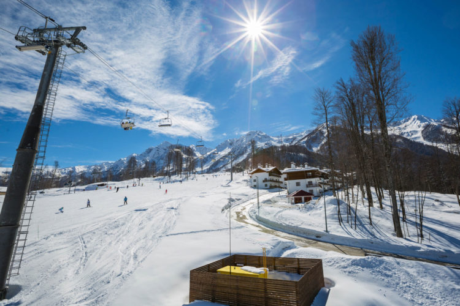

9. Красная поляна (Сочи)

Красная поляна – горнолыжный курорт рядом с Сочи (Адлер). Здесь есть трассы для экстремалов, профессионалов, любителей горнолыжных спусков и для начинающих. Отдыхающие, желающие сфотографировать близлежащие достопримечательности России и Сочи, могут подняться вверх на канатной дороге и сделать несколько редких кадров. Конечно, большее число туристов в Красную Поляну приезжают именно в зимнее время года, но и летом даже те, кто решил отправиться сюда с малышами, обязательно найдут здесь достойные развлечения. Та же самая канатная дорога, работающая круглый год, понравится и взрослым, и их любопытным чадам, уже успевшим устать от пляжного отдыха и частых морских купаний. Взяв билет на подъемник, можно подняться на самую высокую точку, расположенную в горах и расслабиться в баре «Высота», взяв себе глинтвейна, а ребенку – натурального сока. Тут же располагается горная олимпийская деревня, построенная к Олимпиаде 2014. Здесь можно остановиться в отеле любой ценовой категории. Летом на курорте нужно обязательно покупаться и позагорать на местном пляже, любуясь потрясающим видом вокруг горы.